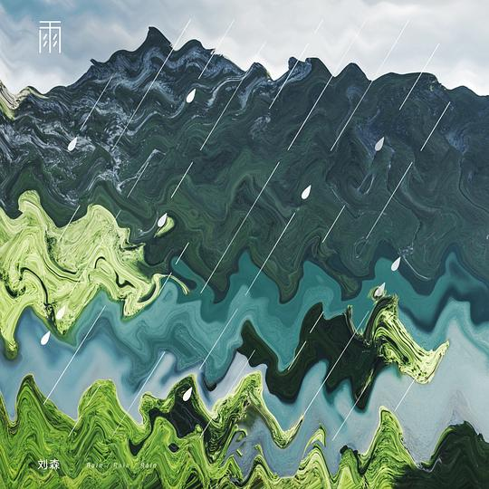

简介
歌词
Live
专辑简介
10 位中国当代 前沿诗人 共同合作
独立音乐创作者 刘森 倾力打造
首张诗乐专辑
雨，拥有无法被他人变更的柔软质地。
它降落在不同的地方
玻璃幕墙、石棉瓦屋顶、苍天古木、蓝色大湖、城市或是乡野……
它因万物定义自己的存在，也定义着他人。
这就是雨
/// RAIN RAIN RAIN ///
它是我们的乡愁，逝去的往昔，以及难以企及的愿景。
专辑缘起是因为音乐人对10位诗人诗歌的感触，来自不同地域、不同世代的十位诗人，在他方，在故乡，取瑟而歌，写下十首不一样的人生况味。音乐人刘森用他独特的音乐风格，为这些诗注入了全新的情感特质。10首风格迥异的诗歌，10首多变的曲风形式，带着我们共同的追溯出发，制作出这张带着潮湿记忆的专辑。
2018年的末尾，请在张扬和宁静、乖戾和放达之间，聆听我们与这个时代的情思。
歌词
Live现场
《冬夜里的雨滴》2019/03/31 方磊小说集《走失的水流》首发式
创作者说